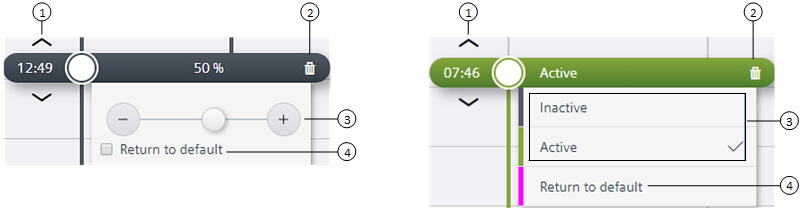

修改时间表
本节概述了修改计划的以下过程：
- Adding a switching point
- Using the expanded modification controls
- Modifying the time
- Deleting a switching point
- Changing the current value or setting
- Returning an object to the Schedule default
Adding a switching point
使用此过程可将新的值更改或设置添加到计划中。
- While in Edit mode, click on the day and time where the switching point is needed.
- A new switching point displays.
- Enter or select the value of the switching point.
- Click Save to save the new switching point.
NOTE: Cancel放弃自上次保存以来的所有更改。
Modifying a switching point

① | Modify the time |
② | Delete the switching point |
③ | Command controls |
④ | Return to default |